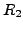
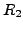

Next: Quaternion routines
Up: The Vision Package
Previous: The Gandalf line detector
Contents
#include <gandalf/vision/rotate3D.h>
Gandalf has an extensive set of routines for handling 3D rotations.
Four different representations are available, defined by the following
enumerated type:
/* types of rotation handled by Gandalf */
typedef enum { GAN_ROT3D_QUATERNION, GAN_ROT3D_EXPONENTIAL,
GAN_ROT3D_ANGLE_AXIS, GAN_ROT3D_MATRIX }
Gan_Rot3D_Type;
These representations are now described in turn.
- The quaternion representation uses the following structure:
/* quaternion structure */
typedef struct Gan_Quaternion
{
double q0, q1, q2, q3;
} Gan_Quaternion;
The relationship between a quaternion
and the equivalent rotation matrix  is
is
Here the quaternion is assumed to have been scaled to unit length,
i.e. .
- The exponential representation uses a 3-vector
related to the equivalent rotation matrix according to
where
is the rotation angle, and the cross-product
matrix
is explained in Section 5.2.
- The angle/axis representation is strongly related to a
quaternion, according to the formula
where the rotation axis
is assumed to be
scaled to . The rotation angle  is measured in radians.
is measured in radians.
- The matrix representation uses a
 matrix as
above to represent a rotation
matrix as
above to represent a rotation
This variety of representations is necessary because of the corresponding
variety of operations that can be applied. For instance, quaternions are
perhaps the most natural representation, and are a good representation
when combining rotations, because quaternion product has a simply linear
formula. Given two quaternions
 and
and
 , with corresponding rotation
matrices , , the product
, with corresponding rotation
matrices , , the product
is equivalent to the rotation matrix product
You should always use quaternions for combining rotations in this way, because
if you use matrices the rounding error will accumulate over repeated
matrix multiplications, and cause the matrix to become non-orthogonal.
With quaternions the scale will drift slightly, but it is much easier to fix
the scale of a quaternion than to correct the matrix representation.
The angle/axis form is mainly useful as an intuitive way of defining
rotations. It has the problem of having no unique representation of
zero rotations, since in this case the axis is arbitrary.
The exponential representation is unique in being a minimal
representation with its three parameters. It is mainly useful however only
for small rotations, since it has severe singularity problems for
large rotations. For optimisation purposes, you can use the exponential
form of rotation to represent a small change in the estimated rotation,
with a quaternion used to represent the latest rotation estimate.
Similar local coordinate forms of optimisation have been
employed in 3D reconstruction by Taylor &
Kriegman [14]. A local rotation
representation has also been developed independently by Pennec &
Thirion [11]
First we describe some routines specific to the quaternion representation.
Then we provide details of how the Gandalf structure Gan_Rot3D
is used to create and manipulate rotations of any of the currently
supported representations.
Subsections
Next: Quaternion routines
Up: The Vision Package
Previous: The Gandalf line detector
Contents
Philip McLauchlan
2009-01-27